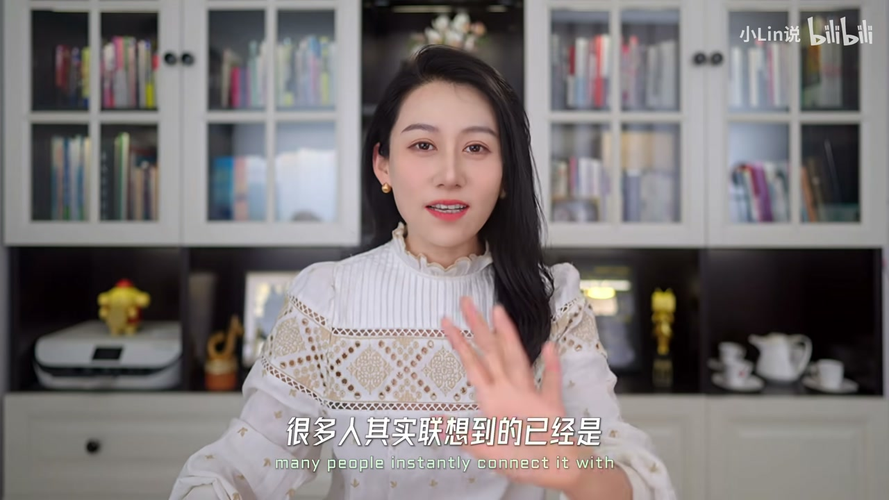
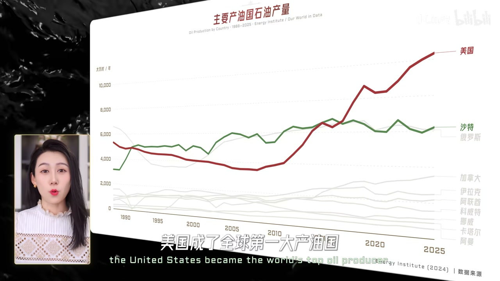
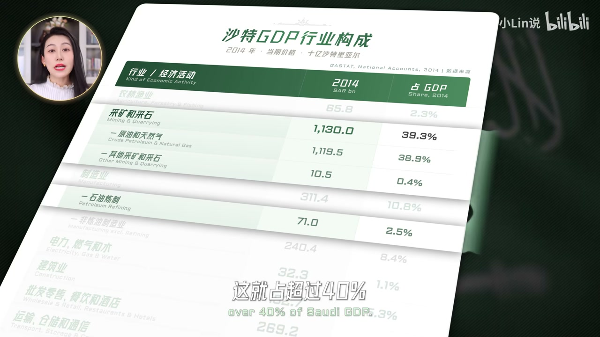
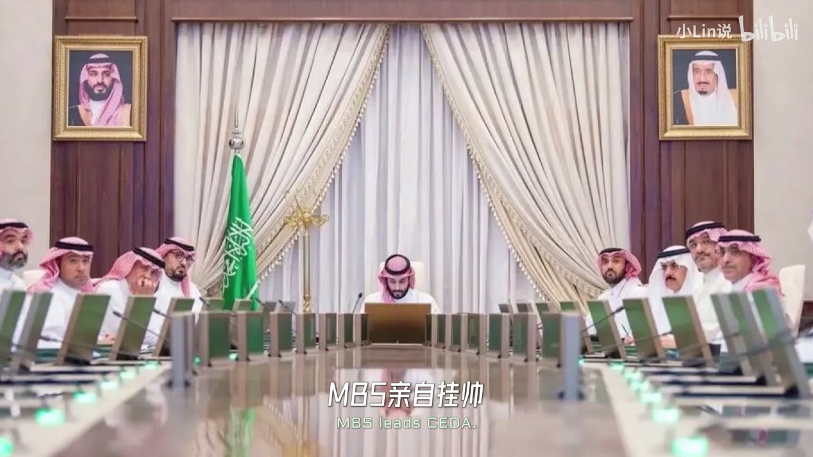
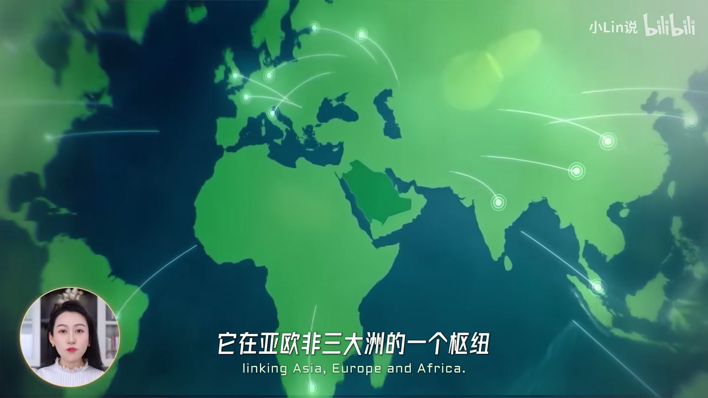
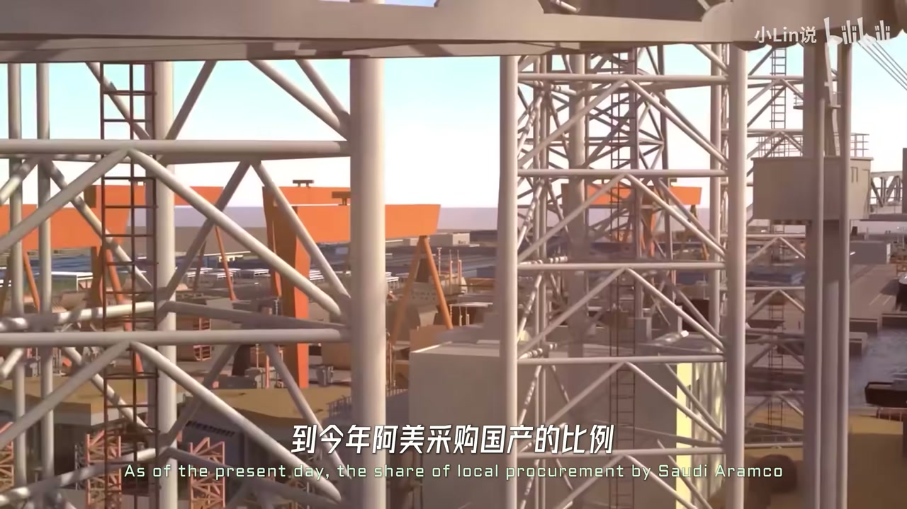
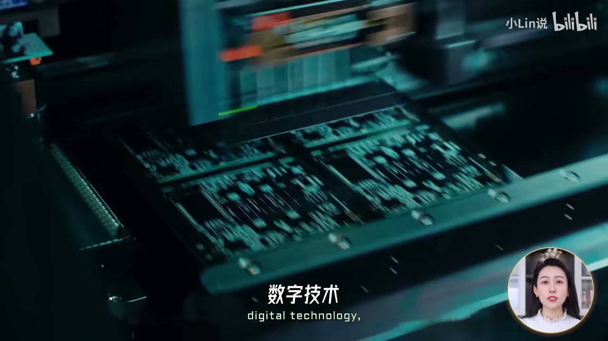
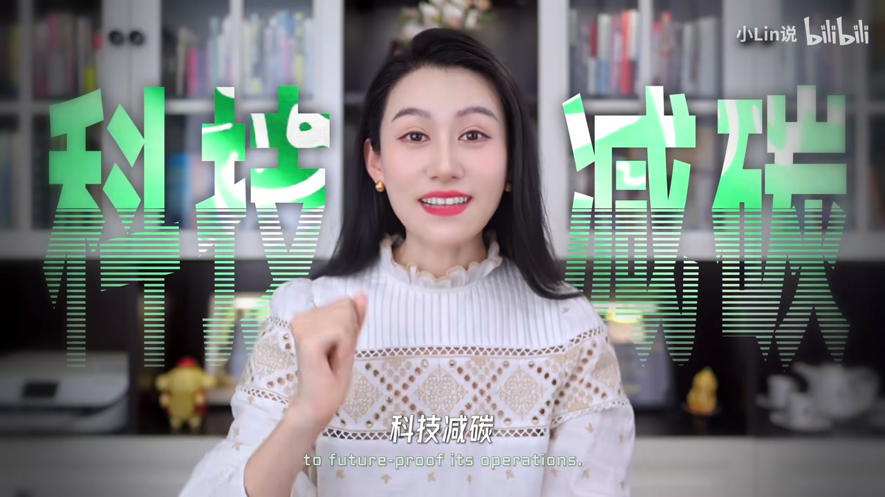

内容要点
小Lin说把「线性城市／沙漠滑雪场」之类的地标新闻压下去，改从经济结构问：沙特这个庞大石油体究竟怎么转身。线索是美国页岩油改写供给、石油诅咒吸干非油产业，再落到王储 MBS 用 CEDA 集权、PIF 出钱，按「先修路—IKTVA 筑底—合资孵化」三层推进，最后用十年数据回答依赖是否下降、新苗能否自立。
知识结构
不止地标；紧迫感来自能源格局与美国页岩油。
2014 油价暴跌；GDP 表显示油气吸走资源＝石油诅咒。
CEDA 拍板＋PIF 掏钱，皆归 MBS。
枢纽特区；IKTVA 本土采购冲刺 75%。
市场换技术：汽车、ALAT、NAMAT、宝钢厂。
油气占 GDP 大降；文旅引流；苗能否不靠大树。
2030 愿景不是撒钱奇观清单，而是「权钱集中→基建与本土供应链→合资孵化」的分层转身；石油仍是托底火箭助推器，成败看新产业能否自己长成。
00:00-01:25从「中东土豪」到结构转身
开场问提起沙特你会想到什么：以前是石油与土豪，现在常是线性城市、F1、电竞或 C 罗。小Lin说这些只是表面——国家经济转型不可能只靠地标。
为何砸万亿美元级转型？能源转型是一层，更深层是国际能源格局变化，尤其美国等产油国压力。00:08 商场传统服饰画面用来对照刻板印象。


01:25-03:40页岩油革命与石油诅咒
页岩油技术成熟让美国产量飙升，2014 成全球第一产油国，油价从约 110 美元跌到 30；OPEC 减产也难立刻稳住，因为腾出的份额会被页岩油填上。沙特 GDP 增速放缓，2015 财政收入同比降超四成，IMF 甚至警告不节制则数年储备告急。
更致命的是对油价掌控力下滑，以及产业结构：油气加炼油占 GDP 超四成，所谓非油制造、政府活动、金融地产零售最终仍绕回石油；人才也被吸走——「沙漠唯一大树」的石油诅咒。02:50 的 2014 GDP 行业构成表是硬证据。

03:40-05:20CEDA 集权与 PIF 钱袋子
转型不是从零开始，但以往小打小闹；2015 年起由王储 MBS 主导彻底改革。君主制下要推长周期、短回报项目，首先集权：废除分散委员会，成立经济和发展事务委员会（CEDA）并由 MBS 挂帅。
钱袋子是主权基金 PIF（口播约 9000 亿美元），划到 CEDA 体系下，还转入沙特阿美股份注资。「一个管拍板、一个管掏钱」，权钱到位才谈愿景文本。2016 年正式提出 2030 愿景。

05:20-07:30先修路，再 IKTVA 筑底
愿景网站上百项目被收成三层。第一层修路：亚欧非枢纽、机场与经济特区（含航空物流），把运输网络铺开。05:40 沙漠工地挖掘机群对应「先修路」。
第二层搭本土产业链：过去阿美设备服务约 65% 进口；于是主打 Made in Saudi，由阿美做链主推出 IKTVA，目标超 75% 本土采购，订单＋Spark 园区场地双轮驱动。讲解称本土采购占比已从 2016 年不到 40% 提到约 70%，冲刺 75%。


07:30-08:55孵化层：市场换技术
第三层孵化汽车、AI、电子等需要长期积累的产业：路径是合资、市场换技术——如 PIF 与富士康等推 SEER、宝马授权、与现代建厂，以及 ALAT、联想工厂、软银机器人等。阿美 NAMAT 想从能源扩到数字与先进制造；与宝钢签一体化钢板厂，要求外资把部分生产放在沙特。
比喻：石油是火箭助推器，要把国家推上新轨道，但助推器迟早分离。08:22 头显与全息界面画面服务「拓展数字领域」一句。

08:55-11:06十年后：依赖下降，苗能否自立
2016 至今约十年：油气开采占 GDP 从约 39.3% 降到约 17%，绝对值也在收缩；制造、零售餐饮酒店等上升，文旅体育（巨星、世界杯亚洲杯、F1、电竞）被归为流量与知名度工具。阿美同时做科技减碳与智能油田，口播称上游碳强度可比行业均值低约 50%–70%，并尝试从卖油转向为算力等提供能源。
结论克制：中东富豪并非只会挥手撒钱，而是有计划分层改；石油仍托底输血，关键看新苗将来能否不用人浇、不靠大树自己长成。

完整转录（394段）
以下文本由 Whisper medium 模型自动转录，可能存在少量识别误差，已尽可能修正。
哎 提起沙特你会想到什么
要是放以前
罗巴是石油 东东土豪
对吧
那现在很多人其实联想到的
已经是线性城市
F1 宴境或者C楼
最近十来年
沙特发生了翻天覆地的变化
也是最近几十年
发生在整个沙特最大的一股浪潮
就是这个沙特阿拉伯
2030 愿景进化
你是不是一听感觉
哎 这计划我熟啊
就是那个线性城市沙漠滑雪场
哎 这只是表面
你想一个国家要经济转型
不可能只靠这些
所以今天呢
我想从更底层的经济结构的角度
带大家来仔细看看
沙特这么一个庞大的经济体
它到底准备怎么转身
怎么给整个国家去游
首先 沙特他为什么要搞
这个2030 愿景计划呢
很多人第一反应可能是
能源转型呗
哎 这肯定没错
但是呢
能让他有这么强的紧迫感
愿意砸几万亿美元转型
这背后其实有一个更深层次的因素
就是国际能源格局的变化
尤其是美国
等等产油国这边的压力
1970年代之后
包括沙特在内的海湾国家
都靠着石油过上了好日子
虽然也经历了多次的油价波动
控制到了GDP
但是呢 它相对可控
核心原因呢
还是因为油价
它基本上还在OPEC的掌控之中
而沙特
又是OPEC的领头羊
就可以跟其他成员国一起稳住市场
但到2010年代
发生了什么事呢
美国这边的液盐油开采技术
它成熟了
就是之前采不出来的油
现在能采出来了
这事可能对大多数普通人来说无足轻重
但对这些产油国来说
打击是巨大的
液盐油技术呢
让美国这个储量本身不高的国家
产量飙升
2014年
美国成了全球第一大产油国
所以整体的油价也是一路狂跌
关键是什么
它其实不是一个短期冲击
而是整个能源格局
供给结构的变化
以前OPEC一减产
油价就稳了
但现在你减了
这个液盐油可以立马把你腾出来的市场给吃掉
所以2014年底
OPEC干脆一咬牙
不减了硬扛
跟液盐油拼成本
14到16年
国际油价上演了一场十世级的暴跌
从110美元一路跌到了30美元
中东整体的经济也遭受到了一击重拳
比如说沙特
GDP的增速逐年放缓
15年的财政收入
相比于14年
下降了40%多
当时IMF都说了
就这油价
沙特您要是不省着点花
5年内
财政储备就会枯竭
所以你看
这不光是油价下跌的问题
关键是像沙特这些中东国家
它对油价掌控力的下滑
这个是很致命的
这次美国液盐油革命的冲击
不光是让沙特的收入锐减
关键是让他意识到了
不行
对石油的依赖太高
不光是财政收入一大块来自卖油
而是整个国家大部分产业
都是围着石油在转
你看14年那会儿它的GDP
首先
石油天然气加上炼油
这就占超过40%
除此之外
非油制造业
虽然它叫非油
但主要是石化塑料等等
也是石油的延伸
8.4%
政府活动
13.6%
政府钱从哪来呢
石油
还有什么金融 地产 零售
最后绕了一大圈
基本都会指向石油
这其实都不光是表层的
说钱集中在石油领域
关键是最好的人才资源
也会多往石油相关的产业里头去
石油产业就像是这个沙漠里头
唯一的一棵大树
看着枝繁叶茂
但是水 养粪
全都被它吸走
别的产业连发芽都难
你想大家靠着石油就已经很滋润了
干嘛费半天进去什么创业 创新
到其他产业 对吧
这样长期以来呢
非石油产业的发展就会被抑制
这就是典型的石油诅咒
这次美国在一颠覆
直接把市政府转门给整齐了
他们原话就说
沙特对石油的依赖
已经妨碍到了很多产业的发展
不能再让国家被大宗商品价格
和外部市场摆布
其实呢 这种转型
他们从70年代就开始做了
属于那种小打小闹的
改得也不成彻底
而这次这个愿景计划就非常紧迫了
2015年在国王的授意下
由沙特王储MBS主导
沙特准备来一次彻底的改革
你看 包括沙特在内
中东大部分石油国家
它都是均组织
所以理论上都是王室说了算
但是呢 你要进行如此大规模
长周期 短期内回报又低的投入
还是非常考验领导力的
所以想要顺利推进这个愿景计划
首先要做的就是集权
之前呢 沙特的经济决策
是分散在很多个部门
十几个委员会手里
这个王储MBS上任之后呢
大刀阔斧 废除了很多委员会
成立了一个新的经济规划的权力中书
叫C党
经济和发展事务委员会
MBS亲自挂帅
这个C党很重要 大家可以记一下
除了权 做大事还需要什么
没错 就是钱
沙特有一个国家级的钱袋子
就是它的主权基金TIF
这个咱们讲全球十大主权基金的时候
也讲过 规模大概是9000亿美元
为了这次愿景计划的大改革
这个TIF被划到了
刚才成立的那个权力中书C党的下面
甚至还把沙特阿美的很多股份
也转过去给它注资
你看 一个C党 一个TIF
一个管拍板 一个管掏钱
而这俩自然都归王储MBS管
现在管事的人 权 钱全到位了
就给接下来的改革扶平了道理
2016年沙特正式提出了
正式提出了著名的2030愿景计划
作为整个国家经济转型的一个计划书
可以说来了一个地儿超天市的改革
再来看看
这个是他们2030愿景计划的一个网站
你看这里面 上百个项目
我给它们总结成了三层
从经济的角度就是
先修路 这很好理解了
你要支付先修路吗
沙特刚好又有地理优势
你看 它在亚欧非三大洲的一个枢纽
东边波斯湾 西边洪海
北通苏伊士运河 南联亚飞
你把这路铺好了 四通八达 多好
所以它弄了专门的机场项目
还设了五个经济特区
沿海的就有仨
而内陆的一个特区
也是专门围绕航空舰的一个物流经济特区
这些都是围绕运输的
再往上一层 叫做
就是要搭建本土更完整的产业链基础
有点类似于特朗普天天挂在嘴边的
说让制造业回流 不能让产业空心化
你想沙特之前 全靠石油
可就连开采石油的设备和服务
阿美原来大概65%都是靠进口
这就很麻烦了 对吧
所以沙特的第二大重点就是
Made in Saudi 沙特制造
而制造业改革呢 你观察
一般都需要一个超级品类的链主企业
就比如说果粮 就带动整个消费电子
汽车产业也经常是一个巨头
带动上下游
那对于沙特 这个链主肯定就是
沙特阿美
于是沙特阿美就在2015年底
推出了一个叫做Ikta
In Kingdom Total Value App的计划
目标就是超过75%的设备和服务
必须从沙特本土买
它整了一套非常复杂的打分制
简单来说就是
买东西 优先买沙特制造
所以对于本土企业来说就是
你尽管造 只要你制造能力过硬
阿美直接给你斗底
甚至你技术不够 缺资源
它也会亲自下场
帮你去对接一些国际资金 产业巨头等等
比如说他们就搞了一个Spark计划
相当于是一个超级技术园区
目标就是把能源 工业 技术
相关的供应链都给拉到一起
这个简称计划有点多
总之就是Ikta给订单
Spark给场地
等这个园区彻底建好
预计每年能给沙特带来60亿美元的GDP
到今年 阿美采购国产的比例
已经从2016年不到40%
增长到了70%
现在在冲刺75%的目标
所以这个Ikta
记住Ikta
就是给沙特整个工业供应链
打地基的一个核心
修路 注底之后
沙特的下一步就是孵化
主要就是新兴产业
你看它重点就列了
汽车 人工智能 电子等等
这些产业就不光是你投钱就行了
它需要长期的技术积累
而在本土呢
你又不一定有那个链主可以直接孵化
所以沙特他就选了一条
在全球产业发展里头都并不陌生的路
就是核子
用市场换技术
你就说在汽车领域
TIF就拉了富士康
一起传了一个沙特自己的汽车品牌
叫SEER
还从宝马买了技术授权
后来呢又跟现代核子建厂
24年他们又成立了一个叫做ALAT的项目
这里边就包含了很多技术领域的核子
有着跟联想
在利亚德建工厂
跟软银一起成立公司
去制造机器人等等
阿美还专门搞了一个叫做NAMAT的计划
就想从能源领域扩展到数字领域
去孵化现金制造 数字技术
信件能源 AI等等的企业
去进入到这些高富价值的产业
2023年
阿美TIF就跟宝刚签约
要在沙特建一个专门造
一体化钢板的工厂
这个NAMAT里头
很大一部分都是核子
而它对外资的要求呢
就是你必须把一部分的生产
放到沙特来
所以这就是先修路
再注底 后腐化
你看它是不是有点像那个发射火箭
石油呢就是下面那些注推器
要靠它把整个国家
推上一个新的轨道
但目标呢
这个注推器是迟早要分离的
那从16年到现在
刚好10年
这个愿景计划效果怎么样呢
首先
我觉得非常值得肯定的一点
就是它对石油的依赖度
确实大大降低了
你看14年
油气开采占GDP的比重
是39.3%
到25年已经降到了
只有17%左右
甚至你从GDP绝对值来说
这个油气经济的规模还在下降
有一些其他领域发展的很快
比如说制造业是明显的增长
另外像什么零售餐饮酒店
其实也都不错
这个说实在的
得归功于它的文律
你看沙特最近几年
声量做得很大
都签巨星
丝衣罗 本泽马
把这帮人都往沙特引
搞世界杯 亚洲杯
F1 电竞等等领域
都非常火域
现在零售餐饮肯定跟着起了
但有必要说一嘴
虽然它对石油的依赖度在下降
但不是说沙特就不管石油了
阿美是怎么管的呢
它在做科技减碳
比方说它用AI去优化油藏管理
看看地下有多少油
怎么分布和开采
还部署智能油田系统
可以自动调节开采的过程
将近能耗
还跟微软合作
在工业上推进AI的应用
就这种减碳
现在沙特和阿美原油上游的碳强度
能做到比行业平均
一百分之五十到七十
就是从上游去降碳足迹
也能帮助下游
用他们油的企业
去提升出口竞争力
而且你看这两年
AI大爆发
什么谷歌 亚马逊 Oracle
都跑中东去建数据中心
所以你看沙特它也是在尝试
从原来纯粹的卖油
变成给蒜粒提供能源
这些差不多就是
大致上从经济层面
沙特的一个愿景
你看大家印象里中东富豪
它虽然有很多那种
Fancy的项目
但也并不是
把手一挥
就知道撒钱
它也是有计划 有分工
一层一层去改动
你看文旅
就负责流量
发向知名度
工业制造就是大基础了
孵化新产业
其实也是它经济结构转型的核心
而石油
现在还是它经济的一个托底
提供现金输息
这十年的改革
说白了
就是让油气这棵大树
反过来
它水再交给
树底下这些新苗
现在苗是真的长出一片
但关键这个愿景能不能成
你还是得看
这些新苗
它能不能到有一天
不用人交
不用打树交
自己就能长进来